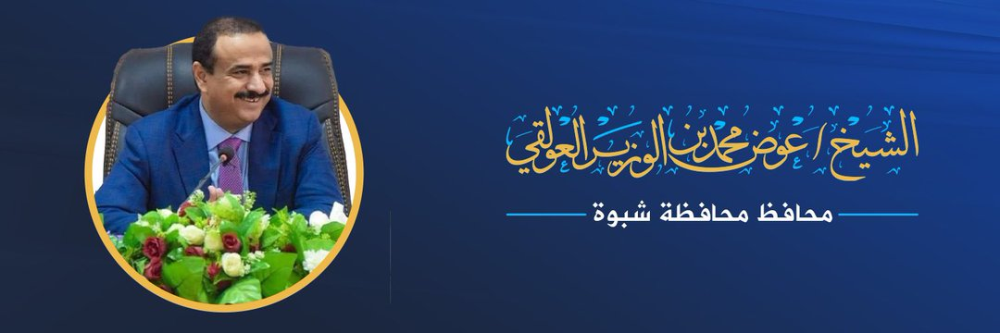
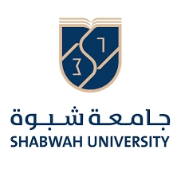

برعاية محافظ محافظة شبوة الشيخ / عوض محمد بن الوزير العولقي

وبالتعاون مع جامعة شبوة
منصة تمـكين شبـواني :-
هي منصة شبوانية وبوابة إلكترونية توفر قناة اتصال مباشرة لخريجي الجامعات والمعاهد العلمية والمهنية والعمالة الماهرة بالمحافظة مع سوق العمل وجهات التوظيف المختلفة لتحقيق تمكين وظيفي شامل لأبناء شبوة في جميع القطاعات وعلى كل المستويات، وتتيح لجميع الجهات بالمحافظة التواصل واستقطاب المتميزين والاوائل وإعلان فرص التدريب والتأهيل والتوظيف.
أهداف المنصة :-
- الإسهام في خلق فرص وظيفية لخريجي الجامعات والمعاهد العلمية والمهنية والعمالة الماهرة بالمحافظة من خلال تسهيل عملية التواصل مع سوق العمل وجهات التوظيف المختلفة بالمحافظة
- العمل إلى جانب السلطة المحلية بالمحافظة وتزويدها بقاعدة بيانات خريجي وكوادر شبوة المؤهلة، لتحقيق تمكين وظيفي شامل لأبناء شبوة على مستوى القطاع العام والخاص والحقول النفطية والمنشاة الغازية
- ربط كوادر شبوة العلمية والمهنية في جميع دول العالم مع قيادة المحافظة للاستفادة من قدراتهم وخبراتهم في جميع المجالات و إشراكهم في الإعداد الاستراتيجي لمستقبل شبوة القادم وإدارة عملية البناء والنهضة الشاملة بعون لله
- مساعدة قيادة المحافظة في اختيار الأكفاء والمتميزين والاذكياء والاوائل لبرامج الابتعاث للخارج بناء على بيانات المنصة والذي سيكونوا اساس النهضة القادمة لشبوة بعون لله
- إتاحة إعلان فرص التدريب والتأهيل والتوظيف لجهات التوظيف المختلفة بالمحافظة